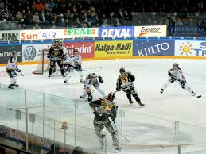

Regresar
Hockey
El hockey (raramente adaptado como jóquey)1 es una familia de deportes originada en Inglaterra a mediados del siglo XVIII en la cual dos equipos compiten para llevar una pelota de un material duro (plástico) o un disco de corcho a la portería contraria para anotar puntos con la ayuda de un bastón largo llamado "palo de hockey" (stick en inglés, bâton en francés).
Hockey sobre hielo
Jugado sobre dicho terreno con un disco de caucho duro (puck en inglés y rondelle en francés) con la ayuda de patines con cuchillas para el hielo.
Los jugadores pueden controlar el disco usando un bastón largo con una lámina curvada en un extremo (llamado palo de hockey o stick en inglés, bâton en francés), logrando golpear el disco con el pie, salvo para meter gol. Si el disco está en el aire, los jugadores pueden tocar el disco con la mano abierta para situarla en el suelo.
Normalmente se juega con un portero y cinco jugadores de campo: dos defensores (defense, défenseur), dos alas (right wing, allier droit y left wing, allier gauche), y un central (center, centre). El portero utiliza equipo protector especial y se coloca frente a la red, permitiendo inmovilizar el disco con sus manos, bastón, o el cuerpo.
Dada la intensidad de este deporte, se permiten la sustitución de jugadores continuamente durante el juego. Al ser un deporte de mucho contacto físico, donde se suceden los choques entre jugadores (hits o body checks en inglés, coup o mise en échec en francés), se ha ganado la reputación de violento entre el público en general. Las peleas (fightings en inglés, bagarre en francés) no están permitidas pero cuando suceden los árbitros las detendrán cuando tengan la oportunidad, al terminar la pelea los árbitros deciden las sanciones debidas para cada jugador que participó en la pelea; ya había establecidos en Canadá varios equipos o clubes y ligas. Se cree que este deporte se jugó por primera vez en Estados Unidos en 1893. A comienzos del siglo XX el juego se había extendido a Europa. Hoy el Hockey sobre hielo se práctica en más de 30 países, sobre todo en Estados Unidos, Escandinavia y la antigua URSS. Es el deporte nacional de Canadá.
Juego lleno de acciones de gran dureza, el hockey sobre hielo está considerado como uno de los deportes más rápidos. Se juega sobre hielo natural o artificial en una pista con unas dimensiones estándar de 61 m por 25,5 m con los ángulos rematados. La pista está rodeada por una valla de unos 1,22 m de alto. Dos porterías de 1,22 m de alto por 1,83 m de ancho están situadas en los extremos de la pista a no más de 4,57 m de los límites de la misma. La zona de juego está dividida por dos líneas azules en tres áreas iguales. Una línea roja divide la pista por la mitad. La zona más cercana a la portería de un equipo es la zona de defensa, la zona central se llama zona neutral y la zona más alejada de la portería es la zona de ataque. La pista tiene cinco círculos de enfrentamiento, cada uno con un radio de 4,6 m, uno en el centro y dos en cada zona de defensa cada partido está dividido en tres períodos de 20 minutos cada uno.
